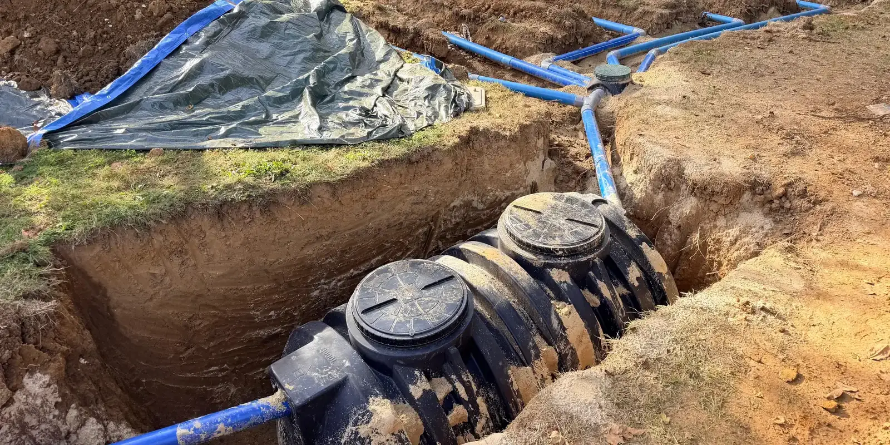

Assainissement non conforme ? Nous réalisons les travaux.
Mise en conformité, raccordement, regards, canalisations, fosses. Sur la partie privée du réseau, en Île-de-France.

Mise en conformité, raccordement, regards, canalisations, fosses. Sur la partie privée du réseau, en Île-de-France.